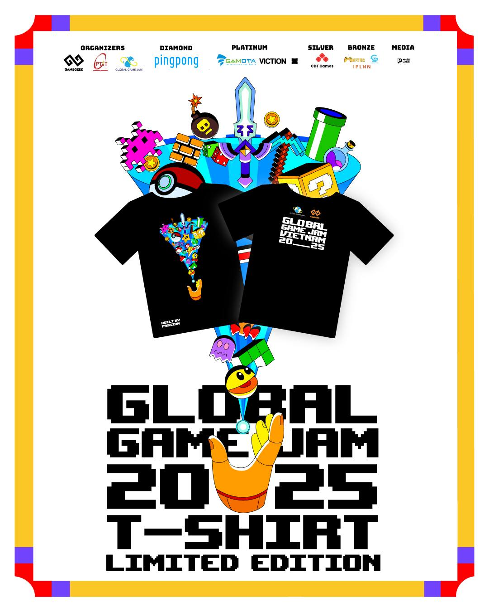
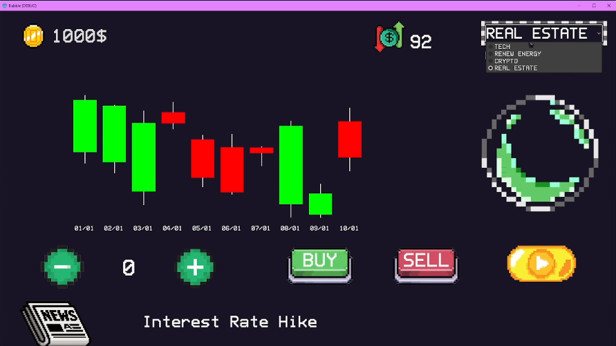

First-Ever Game Jam
12-02-2025
A few weeks ago, I took on a challenge I had never faced before — participating in my first-ever game jam. With just 36 hours to brainstorm, design, and develop a complete game, I knew it would be an intense experience. As someone who has struggled with coming up with game ideas in the past, I was both excited and nervous about how things would turn out. Would my team and I be able to pull something off in such a short time? Or would we crash and burn under the pressure? Either way, I was ready to dive in, learn as much as possible, and push my limits.
Prior to the Competition
We arrived early at the venue, eager not just to secure a good spot but also to grab the exclusive Game Jam t-shirts and some other freebies. We headed to a nearby Family Mart for an early dinner, making sure we'd have enough energy to focus on brainstorming — and inevitably arguing — once the jam began. The staff members were incredibly friendly and funny, making for a great first experience meeting people in the gaming industry or those truly passionate about it.

The waiting lounge did not disappoint. The entire room was carpeted, with several ACs running to keep things cool. Two tables were stocked with instant noodles, snacks, and energy drinks — everything we needed to stay fueled. We found a seat, settled in, and prepared ourselves for the highly anticipated theme reveal.
36 Hours of Learning by Doing
The grand moment arrived—the theme reveal. This year's theme was "Bubble". I found it to be quite a challenging theme, but as soon as we secured a spot to jam, our team immediately started throwing around ideas. One of my teammates came up with an idea that stuck with us: a stock market simulator game based on the concept of an economic bubble.
Initially, our gameplay direction revolved around players buying and selling stocks to maximize their profits, with their actions influencing the market and, in turn, affecting other players' decisions. It sounded promising, but due to the complexity of multiplayer implementation, the short duration of the jam, and our limited experience in game development, we decided to simplify it into a single-player experience instead.
-
First Day:
I was tasked with finding background music and sound effects for the game. Based on my prior experience from the Pikachu game project, I knew I could find some on Itch.io — a great platform where indie developers publish their games and share a variety of game assets. I browsed through different sound effect and music bundles, carefully listening and selecting the ones that fit our game.
After that, I moved on to proofreading the data for our in-game news system, which provided small hints about whether the market would go up or down. I remember dozing off several times while working on it—it wasn't my first all-nighter, but it had been a while since I last pulled one. By 4:00 AM, exhaustion got the best of me, and I finally gave in to a short nap. Two hours later, I woke up and continued adjusting the news data while my teammates got ready for school.

-
Second Day:
After finishing up with the data, I was still exhausted from my 2-hour sleep and, since my teammates had gone to school, I decided to get some more rest. Waking up around 8-9 AM, I got back to work, focusing on integrating the music and sound effects into the game. Brackeys's Godot Turtorial video was incredibly helpful — I'd highly recommend it if you're looking to learn Godot.
Fast forward to the evening, our team gathered to continue working on the game. UI implementation was my responsibility, while my teammates handled the candlestick charts and the news system. After seven hours of focused yet relaxing coding, I managed to integrate all the UI elements into the game by 3:00 AM.
However, I ran into some frustrating issues with global variables, which nearly drove me mad. After some trial and error, we finally resolved it by sending signals back and forth. With that out of the way, all that was left was playtesting and debugging.

Lessons Learned and What's Next
Looking back, my first-ever game jam was an intense yet unforgettable experience. From brainstorming ideas to pulling all-nighters debugging code, every moment was a mix of excitement, frustration, and learning. Despite our inexperience and the challenges we faced, we managed to bring our game to life within the 36-hour limit. More importantly, I got to collaborate with an amazing team, improve my skills, and gain a deeper appreciation for game development.
This experience laid the foundation for my journey into game development, giving me a solid starting point to build upon. Now that I've gone through the entire process—designing, coding, troubleshooting, and refining—I feel more confident in my ability to create a new game in the near future. I'm not sure when my next game jam will be, but one thing's for sure — I'll be back, better prepared, and ready to create something even greater.